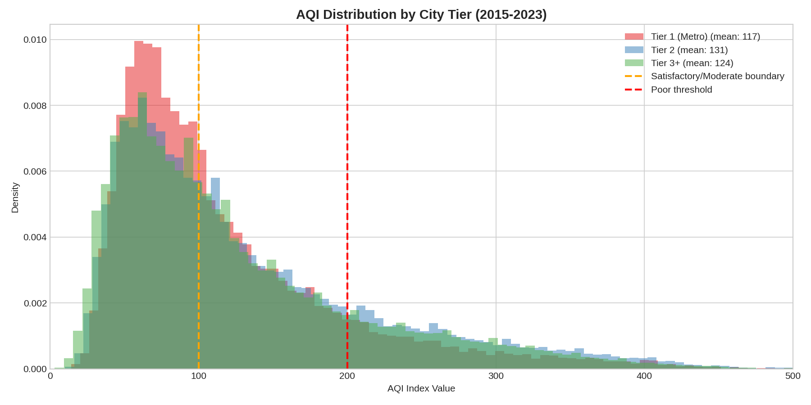
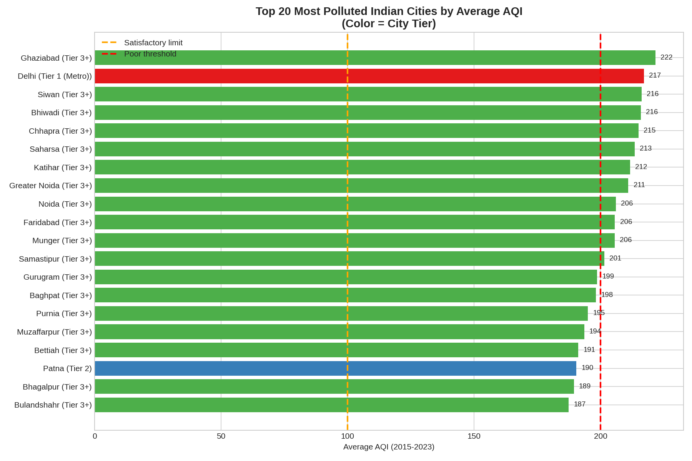

Every Breath You Take: Air Quality Across 277 Indian Cities
If you live in Delhi, the air you breathe each day is roughly equivalent to smoking five cigarettes. But Delhi is not alone, and it is not even the worst. I analyzed daily air quality readings from 277 Indian cities and found that the most polluted places are small towns you have probably never heard of.
I pulled two datasets for this analysis: daily PM2.5 readings for five major metros (Delhi, Mumbai, Bangalore, Chennai, Hyderabad) from 2018 to 2024, and daily AQI bulletins from the Central Pollution Control Board covering 277 cities from 2015 to 2023. In total, the dataset includes over a million city-day observations.
Five metros, one outlier
The 30-day rolling average of PM2.5 across the five metros tells the story immediately. Delhi is in a different category.

Delhi's winter peaks regularly exceed 200 µg/m³, while the four southern and western metros cluster between 30 and 80 for most of the year. The seasonal rhythm is unmistakable: a sharp spike starting in October, peaking in November through January, then gradually falling through monsoon season.
Annual averages make the gap even clearer. Delhi's mean PM2.5 has hovered between 100 and 125 µg/m³ for seven years straight. Mumbai runs a distant second at around 50 to 65. Bangalore and Chennai sit near India's own national standard of 40. No city comes close to the WHO guideline of 15.

Putting it in cigarettes
Berkeley Earth research established a rough equivalence: every 22 µg/m³ of PM2.5 exposure is comparable to smoking one cigarette per day. The conversion is approximate, but it makes the scale of the problem visceral.

Delhi comes in at 5.2 cigarettes per day, based on its mean PM2.5 of 115 µg/m³. Mumbai at 2.7, Hyderabad at 2.1, Chennai and Bangalore each near 1.9. These are annual averages. During winter months, Delhi's equivalent can surge past 8 cigarettes per day. Even Bangalore, the cleanest metro in the dataset, is nearly 2 cigarettes per day year-round.
The seasonal rhythm
Air quality in India follows a remarkably consistent seasonal pattern. Every city gets its cleanest air during the monsoon months (July through September), when rain scrubs particulates from the atmosphere. Then, starting in October, a combination of crop residue burning in Punjab and Haryana, cooler temperatures that trap pollutants near the ground, reduced wind speeds, and Diwali fireworks drives a steep climb that peaks in November and December.

Delhi's seasonal swing is extraordinary. Its monthly average PM2.5 ranges from about 55 µg/m³ in August to nearly 195 in November and December, a 3.5x difference within the same year. The southern cities (Bangalore, Chennai) have much flatter curves, reflecting their distance from the Indo-Gangetic Plain and the stubble-burning belt.
Overlaying Delhi's readings by year shows how consistent this pattern is. Each year traces roughly the same U-shaped curve. The Diwali/post-monsoon period triggers the annual spike, and the shape has barely budged from 2018 through 2024.

The distribution of daily readings tells the same story. Delhi's histogram is wide and flat, with a heavy right tail reaching past 250 µg/m³. The mean (115) sits far above the median, pulled upward by extreme winter days. Compare this to Bangalore, where readings cluster tightly near 40 with few extreme values.

The COVID experiment
The 2020 lockdown provided an unintentional natural experiment. When economic activity ground to a halt in March through May, Delhi saw a dramatic drop in PM2.5. The chart below shows 2020 readings falling well below the 2019 baseline during the lockdown months.

But the improvement was short-lived. By the winter of 2020, readings surged back to typical levels. By 2021 and 2022, the seasonal patterns looked essentially identical to pre-pandemic years. The lockdown demonstrated that vehicular and industrial emissions are major contributors, but it also showed that seasonal factors (crop burning, meteorology) overwhelm any short-term reduction.
Beyond the metros
Most air quality coverage focuses on Delhi, Mumbai, and a handful of large cities. But the CPCB AQI bulletins cover 277 cities, including Tier 1 metros (Delhi, Mumbai, Kolkata, etc.), Tier 2 cities (Lucknow, Patna, Jaipur, etc.), and hundreds of smaller Tier 3+ towns.
The surprise: Tier 2 cities actually record the highest average AQI of any tier. From 2015 through 2023, Tier 2 cities averaged an AQI of 131, compared to 124 for Tier 3+ and 117 for Tier 1 metros. The metro average is pulled down by cleaner southern cities; the Tier 2 average is pulled up by heavily polluted cities like Patna and Lucknow.
The good news: a downward trend
The annual trend shows improvement across all tiers. Tier 2 cities have seen the most dramatic drop, from an average AQI near 200 in 2015-2016 down to around 108 by 2023. All three tiers have converged to a similar range of 108 to 115 by 2023. This suggests that NCAP (National Clean Air Programme) targets and state-level interventions may be making a difference, though every tier still sits above the "satisfactory" threshold of 100.

The top 20 most polluted cities are not where you think
Here is the finding that motivated this analysis. When you rank all 277 cities by average AQI, Delhi comes in second. The most polluted city is Ghaziabad (AQI 222), a satellite city just across the border from Delhi in Uttar Pradesh. And the rest of the top 20 is dominated by small cities: Siwan, Bhiwadi, Chhapra, Saharsa, Katihar, Munger, Samastipur, Purnia, Muzaffarpur, Bettiah. These are all in Bihar or the NCR corridor.
Nineteen of the top 20 are Tier 3+ cities. Only Delhi (Tier 1) and Patna (Tier 2) break through. These small cities rarely appear in national air quality coverage, but many of them average "Poor" air quality year-round.
The category breakdown by tier reinforces this. All three tiers spend roughly half their days in "Moderate" or worse air quality. The distribution of good, satisfactory, moderate, poor, very poor, and severe days is strikingly similar across tiers. Pollution is not a big-city problem. It is a northern and eastern India problem that touches cities of all sizes.

The seasonal pattern holds across tiers too. Every category of city follows the same monsoon-low, winter-high cycle. Tier 2 cities show the most extreme winter spike, with average AQI approaching 200 in December and January.

The historical arc
Zooming out further, historical data paints a troubling long-term trajectory. Across 109 Indian cities, average PM2.5 rose from about 25 µg/m³ in 1998 to over 43 by 2015, a 71% increase. Satellite-derived estimates show an even steeper climb, from roughly 81 µg/m³ in 1998-1999 to nearly 120 by the 2010-2019 decade.
Delhi itself peaked around 154 µg/m³ in 2013-2014 and has come down to roughly 89-92 in recent years. That is progress, but it still leaves the city at 6x the WHO guideline. India's national average PM2.5 was 50.6 µg/m³ in 2024, ranking it 5th globally.
Putting it together
Three things stand out from this analysis. First, the pollution crisis extends far beyond Delhi. Hundreds of smaller cities across Bihar, Uttar Pradesh, and the NCR corridor experience average air quality that is just as bad or worse. They receive a fraction of the monitoring infrastructure, media attention, and policy intervention.
Second, seasonality is the dominant factor. The October-to-January winter spike dwarfs all other variation. Crop burning, temperature inversions, and low wind speeds during winter months are the primary drivers, not just traffic or industry.
Third, there is genuine improvement. Annual averages are trending downward across all city tiers since 2015. But "improving" and "safe" are different things. No city tier has yet reached even India's own national standard on average, let alone the WHO guideline.
Methodology
The metro PM2.5 data covers daily readings for Delhi, Mumbai, Bangalore, Chennai, and Hyderabad from 2018 to 2024, sourced from CPCB monitoring stations via the India-Air-Quality-Dataset. The 277-city AQI data comes from CPCB daily bulletins (2015-2023), processed from UrbanEmissions.info. Historical PM2.5 figures are drawn from published literature (Chemosphere 2020, Lancet Planetary Health 2024, UrbanEmissions RSC 2022, IQAir World Air Quality Report 2024). The cigarette equivalence is based on Berkeley Earth's estimate that 22 µg/m³ PM2.5 is roughly equivalent to one cigarette per day. City tier classifications follow the Indian census/government system. For city-level rankings, only cities with 500+ daily records were included.